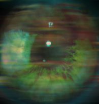

Forums galactiques > Assemblée Galactique : diplomatie officielle > Les Horloges d'Asmea
un humain | 4 | |
un droïde | 1 | |
un vaccin | 3 | |
une horloge | 3 | |
un peut de tout | 4 | |
rien de tout ça | 2 | |
Obiwan Kenoby | 10 | |
Aucune importance | 5 | |
Total : 32 vote(s) | ||
Pages : 1
| Le vendeur d'yeux Respect diplomatique : 218  16/01 ETU 21:56 | Score : 11 Détails (Ceci est un RP perso où seuls ceux qui y sont invités peuvent participer. Merci, et bonne lecture :). Bon, maintenant, pour ceux qui n’ont pas déjà rebroussé chemin, demandez à votre playlist de vous conter une mélodie calme, avec peu d’instruments, pourquoi pas mélancolique… ou je sais pas :D)
Partie 1 : La solution Le pont tangue. Barnabé n’a encore jamais vu d’autres surfaces qu’Œil de Vher. Il respirait toujours ces fumées ocre, ces odeurs de brûlé… Et là, sous ses yeux défilent d’immenses nuages aux couleurs exotiques. Il soupçonne alors exister sous ce velouté d’immenses terres fertiles, de celles qu’il n’a encore jamais vues et dont on ne lui a encore rien dit. Il imagine, car sur ce pont, Barnabé ressens pour la première fois un vent frais et humide caresser son visage. Le vaisseau est amarré aux docks, il fait son dernier plein de nourriture, le dernier nécessaire avant l’amarrage à l’assemblée. Barnabé contemple l’œil qu’il a volé à son maître ; John ou un des membres de l’équipage enfin qu’importe, quelqu’un l’a réparé. Les cercles de cuivre tournent autour de la sphère lentement, inlassablement. Le jeune garçon retourne l’objet, on entend quelques petits gling à travers les murmures du vent. Il se relève lentement afin de…Zut, il a cassé un truc, ah non !! C’est quelque chose, il a bougé quelque chose ! La pupille de l’œil se dilate ! Stop !! Gling ! Un mécanisme ! Quelque chose s’active !!...Ahh, qu’est ce qui lui accroche le pied ! Il trébuche !... ...Shhhhhhhhhhh le vent souffle. Il ramasse l’œil qui a roulé sur le sol. Tiens, cette lame qui dépasse, serais-ce une carte mémoire ? Oui, une icône triangulaire clignote, certainement une vidéo. Barnabé extrait la carte de l’œil, il l’observe intrigué. Une multitude de questions traversent son esprit alors que du bout des doigts, il la tourne et la retourne, l’analysant sur toutes ses facettes. CLANG !!!! Ouah !! Une secousse, le pont tremble. NON !! La carte lui échappe des mains, tombe sur le sol et glisse vers la rambarde. L’œil, lui, roule dans la même direction. Aussitôt Barnabé plonge en avant, il se jette sur les deux outils mais CLANG !!!! Tout l’élan du monde n’aurait pas suffit. Une de ses mains agrippe le cercle de cuivre tournoyant, l’autre caresse une face de la carte mémoire. Zut, Naaaan !! La carte disparaît, elle tombe. Personne n’est témoin de l’immense tristesse qui envahit alors le jeune garçon et même cette carte, si elle avait des yeux, n’aurait pu que voir une main désemparée se tendre vers elle, une main s’éloigner, un vaisseau s’éloigner, puis le silence. …Shhhhhhhhhh La carte tombe encore et encore, elle traverse un de ces nuages interminable puis en ressort quelques temps après. Elle continue sa descente et sous elle, au travers de ces milliers de flocons blancs qui se bercent, elle discerne ce sol enneigé s’approcher. Une lumière clignote, une vidéo se met en route. Broaf. - 16 ans plus tôt, dans un atelier quelconque d’une planète qu’aucun indice ne permet d’identifier. - « Voilà, plus qu’à visser l’armature… Hop, comme ça, lorsque l’œil fonctionnera et que tu trouveras la vidéo, Barnabé, tu comprendras ce que tu es… Maintenant il ne me reste plus que quelques détails à régler et je t’activerais, sois patient Barnabé, sois patient. » - Quelques mois avant qu’une personne inconnue ait prononcé ces paroles - Brrrrrrrrrrrrrr L’océan est agité, son grondement est puissant. Le soleil se fracasse sur sa surface jusqu’à rendre ténébreux toute forme qui n’est pas directement baignée dans son aura. L’immense horizon semble partout la même. Partout, ces mêmes reflets éblouissants. Partout, ces mêmes ondulations. On distingue en contre-jour les vestiges d’un appareil inconnu. On peut entendre, à chaque vague, les éclaboussures de l’eau s’y engouffrant. Face à ce spectacle, tourné vers la mer et scrutant l’infini, un homme se dresse. Il a ne carrure imposante bien qu’il ne soit pas très grand et son épais manteau de voyage claque au vent. Les embruns ne le dérangent pas, de toutes façon, sa capuche l’en protège. Puis un grand être le rejoint rapidement grâce à de grandes enjambées chuchotant au monde qu’aucun obstacle n’est infranchissable. Il s’arrête à ses côtés et son long manteau commence à accompagner les mouvements du vêtement qui couvre l’homme trapu, à la différence que sa danse est bien plus ample et silencieuse. Dans le vacarme déchaîné de la nature, on entend à peine leur discussion qui ne démarre qu’au bout de quelques instants. Brrrrrrrrrrrrrr - Naclay, il nous sera impossible de réutiliser le vaisseau pour repartir. - Ca m’en a tout l’air. Brrrrrrrrrrrrrr - Les habitants de cette planète sont peu évolués, pourtant je suis persuadé que nous pouvons nous débrouiller avec ce qu’ils ont, et peut être même que nous pouvons tout réparer. - Tss, leur matériel est arriéré, ils ne connaissent pas l’électricité, comment veux tu leur extraire un quelconque soutien… aussi minime soit t’il. Brrrrrrrrrrrrrr - Nous avons apporté cette maladie avec nous, en même temps que nous nous sommes échoués. Déjà nous avons dû fuir la planète voisine car tout y périssait, et tu voudrais que l’on parte d’ici, en les laissant agoniser jour après jour ? - Nous n’aurions simplement pas dû voyager ainsi de planètes en planètes. Et nous voilà maintenant égarés dans un lieu où rien ne nous servira. Brrrrrrrrrrrrrr - Et comment comptes tu partir d’ici ? C’est impossible ! - … Brrrrrrrrrrrrrr - … - Aurais-tu du feu ? Brrrrrrrrrrrrrr - Je vais aider ce peuple, et trouver un remède à cette maladie. Je vais rester ici et faire de cette terre un empire uni, un domaine en paix…Tiens. - Merci…Et tes rêves créeront encore et encore de nouveaux problèmes, et un jour, Coemgen, tu t’apercevras que tes inventions ne répandent que le chaos et la mort. Brrrrrrrrrrrrrr - j’ai déjà une solution, j’ai une idée. - Crois-le, un jour je ferais en sorte que tu m’entendes. Mais je t’en prie, annonce moi cette solution, donnes moi le nom de ce qui, cette fois encore, nous sauvera ? Brrrrrrrrrrrrrr - Il s’appellera - … Brrrrrrrrrrrrrr - Barnabé. - … Brrrrrrrrrrrrrr - Nalcay Päevalgus, est tu avec moi, vas-tu m’aider à forger ce destin ? - Plus jamais, Coemgen Voïshrahka. Plus jamais. | ||
| Nalcay Naokimary Respect diplomatique : 117  17/01 ETU 01:17 | Score : 12 Détails les embruns arrivaient au visage des deux hommes silencieux, telles autant de particules humides se déposant sur leur peau sèche et tannée par les vents.
Nalcay avais pris un air qui vacillait entre résignation et colère. Tout ce qu’ils avaient entrepris jusqu'à présent tendais bien trop frequement sur l’échec. Et c’est un nouvel échec qui se préparait au sein de l’esprit tourmenté de Coemgen. Il le sentait. Tant ils se connaissaient, il n’aurais su deviner a quoi il pensait de manière précise, mais il sentait l’impertinence. La démence. Une même folie dévorait les deux hommes, depuis qu’ils s’étaient connus sur Aesma. Bien des aiguilles avaient tournés depuis cette époque, et c’était aujourd’hui un syndrôme plus insidieux, plus profond, qui rongaient leur corps et leurs esprits. Cette maladie dont ils ignoraient tout, et qu’ils portaient en eux, qu’ils apportaient avec eux, partout ou ils allaient, aujourd’hui encore elle était là. Elle était leur siamoise immatérielle, l’alliance qu’aucun doigt ne pouvais porter. Leur chair tourmentait leur esprit, de même que leurs esprits se torturaient l’un l’autre, sans qu’ils n’en surent jamais la raison. Aujourd’hui. Aujourd’hui encore, ils étaient là. Face a l’échec. Face au naufrage. Leur naufrage. Une fois de plus ensemble, devant le chaos de leur existence, devant la fuite de leur réalité. Tout en continuant de fixer la mer, il s’adressa à nouveau a Coemgen. -Tu sais ce qu’il m’en a coûté la dernière fois. Ce qu’il nous en a coûté. Je ne veux plus de ça. Tes maudites solutions, a des problèmes dont nous ignorons l’essence même, nous ont chaque fois conduites a une nouvelle avalanche de conséquences. Il cligna des yeux, une larme perla au coin de son œil. Le vent avait redoublé, asséchant un peu plus à chaque rafale l’amertume des paroles qu’il voulait proférer. Ses yeux se crispèrent, et il tourna lentement la tête vers Coemgen. Sa petite taille lui faisait baisser les yeux, vers ce petit être qui semblait si fragile. Au yeux de Nalcay Päevalgus, tout était minuscule, indigne d’intérêt, sauf peut-être, cette masse de chair gloussant dans ses élucubrations incohérentes. Voyant que Coemgen n’avais pas quitté la mer des yeux, son regard s’attrista d’avantage. -M’as-tu écouté, Coemgen Voïshrahka. M’as-tu seulement entendu ? -Mmmh ? Barnabé, je viens de te le dire a l’instant ! Alors, tu est avec moi n’est-ce pas ? -Coemgen, tu… -Je le savais, tu as toujours été avec moi. Ce projet est simple, et pourtant révolutionnaire… Déjà, Nalcay avait cessé d’écouter. Il avait perdu l’ami qu’il avait connu. Il avais perdu le Coemgen d’il y a 16 ans. Le Coemgen d’Asmea. Celui avec lequel il avait tout partagé, sauf peut-être, la jeune Vissahka, qu’il n’avait jamais pu toucher que de ces yeux. -Tu y pense encore n’est-ce pas ? Tu te souviens de cette fois ou… Les mots se perdirent dans le vent. Coemgen n’était plus que deux empreinte de pas, solidement ancrées dans le sable fin. Sa silhouette s’éloignait déjà au loin, il avais rebroussé chemin, s’écartant de l’océan. -Ou vas-tu nous mener, cette fois, Coemgen… Ou te dirige tu avec ta solitude pour seule compagne ? Mais le petit homme n’était plus qu’une petite silhouette bougeant lentement. Les embruns se transformaient en poussière sablée, et les volutes de sable portées par le vent le séparait un peu plus de son ami, à chaque nouvelle bourrasque. Nalcay tourna a nouveau le regard vers les flots. Ceux-ci lui paraissait sans émotions, d’un mécanisme et d’une logique déconcertante. Cette mélodie d’un autre temps était devenue raison, et monotonie, emportant avec elle le souvenir d’une amitié soufflée par la démence et le désespoir. … Il resta jusqu'à la tombée de la nuit, a réfléchir et a sentir les ondes salées qui se dégageaient de cette grande masse sombre sans fin. Après s’être décidé a retourner sur ses pas, il s’aperçu que Coemgen avait laissé dans le sable une pièce de métal pointue. Une aiguille d’horloge… Le souvenir avait été presque effacé par le sable qui le recouvrait. Nalcay le ramassa, avec un geste lent, et retourna vers l’abri de fortune qu’ils s’étaient construits avec Coemgen. Il pouvais déjà apercevoir les halos orangés, devant lesquels s’agitaient des ombres cauchemardesques de la végétation d’une étonnante luxuriance, si près de l’océan… to be continued... |
Pages : 1
Forums galactiques > Assemblée Galactique : diplomatie officielle > Les Horloges d'Asmea